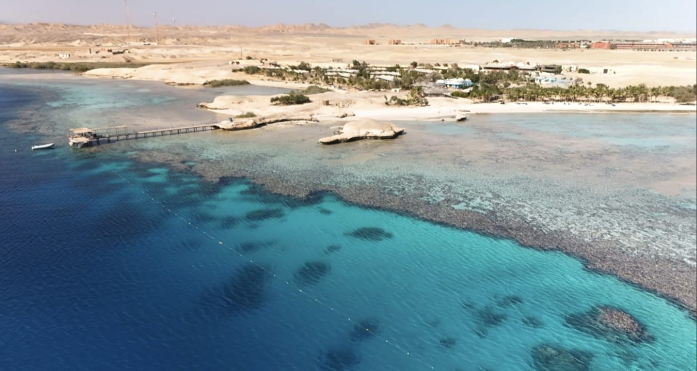
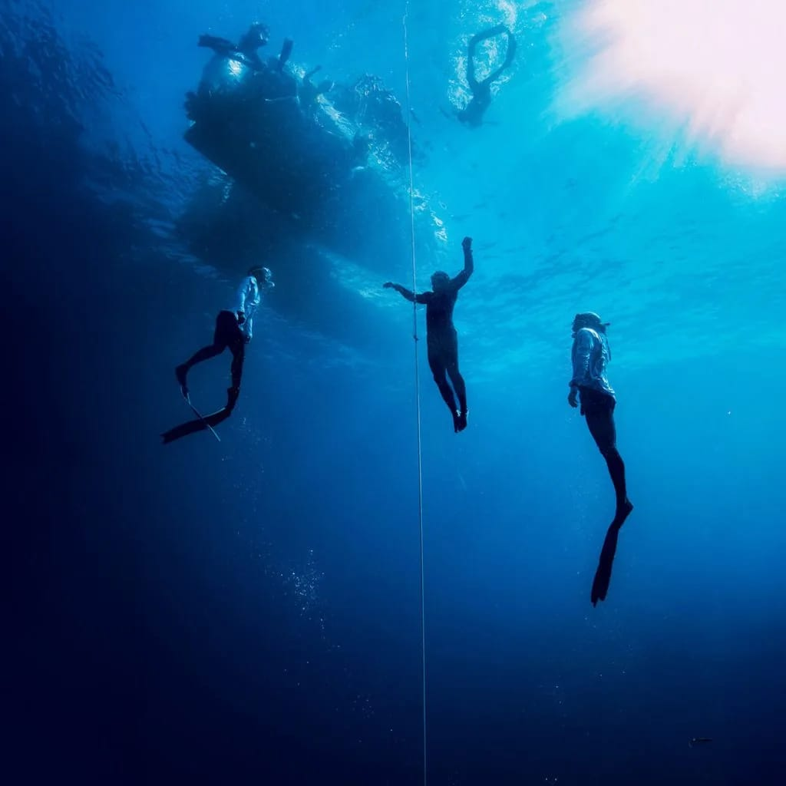

A dream. A place. A community.
We chose to start where no one had started before — and built the home freedivers in Southern Egypt didn't have yet.

Our vision
Starting where no one had started before
When MarsaAlam Freedivers was founded, there was no dedicated freediving centre in Marsa Alam. Many saw uncertainty — we saw opportunity.
We believed that one of the world's most beautiful coastlines deserved a home for freedivers. We believe this sport can inspire people, build confidence, and create a community connected by a single breath. Starting alone meant taking risks, creating our own path, and believing in something before others could see it.
Our vision has never been just to teach freediving. Our vision is to build the home of freediving in Marsa Alam — a place where people from all over the world come to learn, grow, challenge themselves, and fall in love with the Red Sea, one breath at a time.
How we got here
From an empty coastline to a diving community
Chapter 01
The idea
Marsa Alam had the coastline, the reefs, and the conditions — but no dedicated home for freedivers. We set out to build one.
Chapter 02
The first breath-holds
Our first Try Freediving and Basic Freediver sessions introduced the sport to travellers who had never breath-held below the surface before.
Chapter 03
Building the certification path
We expanded into full SSI certification — Level 1 through Performance Freediver — so every diver has a clear route from the surface to real depth.
Chapter 04
A home, not just a course
Today, MarsaAlam Freedivers is a growing community — training packages, workshops, and ocean experiences for freedivers at every level.
What we stand for
Our values
Safety over depth
The best freedivers aren't the deepest — they're the safest, the smartest, and the most respectful of their bodies and the ocean.
Community, one breath at a time
Freediving is personal, but progress is shared. We build small groups and honest coaching relationships, not crowds.
Respect for the reef
Access to Marsa Alam's untouched coastline comes with responsibility — for the marine life and for the sites we dive.
Ready to become part of the community?
Start with a half-day Try Freediving session, or jump straight into a full certification path.